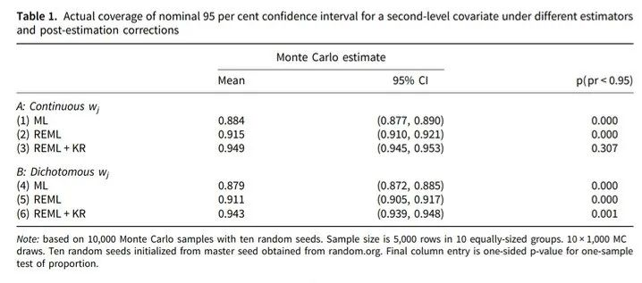
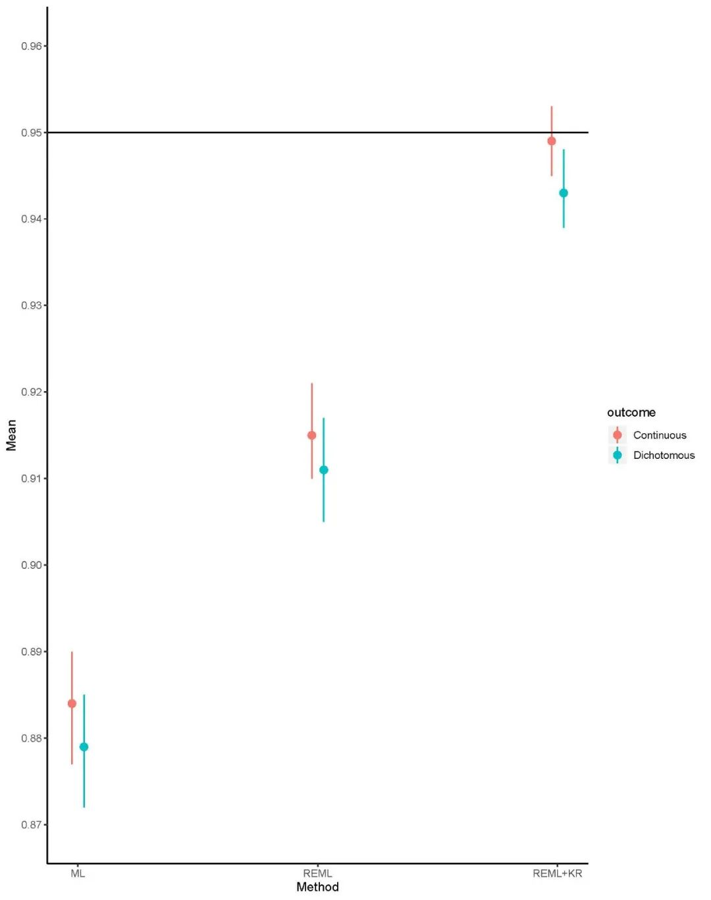
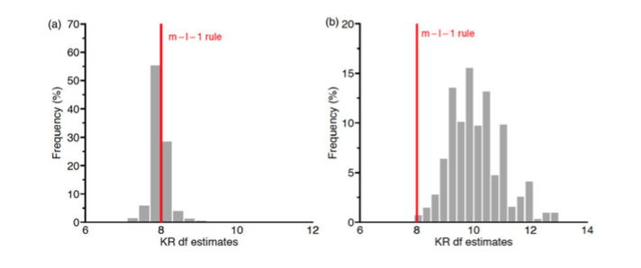
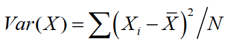
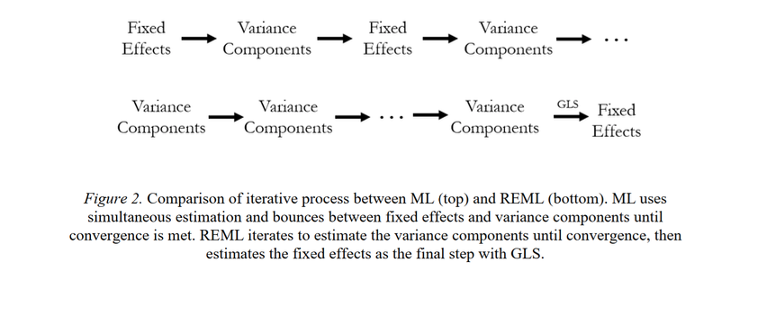

收录于合集
文献来源：
****Daniel Stegmueller, “Comment on Elff et al.” British Journal of Political Science , May 2020.
Martin Elff, Jan Paul Heisig, Merlin Schaeffer and Susumu Shikano, “Rejoinder to Daniel Stegmueller’s Comments”. British Journal of Political Science , May 2020.
编者按： 本期合辑是Daniel Stegmueller就Martin Elff等对其文章讨论的回应和Martin Elff等人对回应的回应，此文会挑出他们所说的重点进行编译，他们相互之间的客气话就不关注了。不过，学术评论与对话需要客观、相互尊重、和谐讨论，这非常值得我们这样的新手注意与学习。
Daniel Stegmueller的评论
Daniel Stegmueller很早就关注ML在小样本估计中的问题，而2013年以后引用他文章的研究也基本都是应用于小样本的研究。之前也有很多研究已经关注到了REML以及Kenward- Roger对于检验统计量分布的修正，且发现了这两个方法对频率学派的估计所带来的助益，说明在相关研究上，研究者并不一定必须依赖贝叶斯方法。Elff等人的研究确实为此做出了贡献，也呼应了这些研究。尽管Stegmueller同意Elff等人的论点，Stegmueller也提出了一些可以进一步讨论的地方。
1. 调整与未调整的ML估计质量
Stegmueller同意Elff等人提出的关于模拟数据样本量较少的论点，但是他们的论点会给人造成这样一种印象：如果不使用较大的数据量，造成的结果必然有偏。然而Stegmueller认为这种观点是错误的。他利用10个随机数种子，产生了10000个蒙特卡罗样本，计算置信区间覆盖率的差异。表1为结果，而图1是编者为方便读者，利用R软件对表1数据的可视化。
表1

图1 表一的可视化
图表显示，即使样本量增大到原文(Stegmueller,2013)的十倍，ML的估计依然和真实情况的匹配度不高（即显著偏离0.95的均值估计线），而REML的估计虽然比ML的估计要好很多，但是也还有4%左右的偏差。当然，REML+KR的估计非常完美的证明了Elff等人关于估计方法的论点。
2. 更为贴近实际的数据产生过程与未来研究的建议
Stegmueller认为，蒙特卡罗方法模拟现实数据的过程的确有待进一步改进，为了说明近似的准确性如何随模型特征而改变，他进一步进行做图比较m-l-1法则和KR自由度估计(Kenward& Roger,1997)的差异。数据是5000个蒙特卡罗样本。图2左侧是宏观层面的协变量的效应，右侧是随机截距模型变量的主效应。左图说明这两种模型特征在估计宏观层面协变量的效应上效果近似，但是在估计随机截距上却有非常大的差异。因此Stegmueller提出，未来如果能够进一步探究m-l-1法则在不同模型中的应用，可能对后续的研究更有帮助。

3. 贝叶斯方法与实践上的建议
Stegmueller认为，关于频率学派与贝叶斯学派，不同的方法之间的一致性能够为其他方法提供可靠的稳健性检验。另外关于贝叶斯推断，Stan语言的发展以及R、Stata等软件都为研究人员在贝叶斯方法的应用上提供了便利。尽管他不赞成研究人员不懂贝叶斯方法的基本原理就去贸然使用，但是的确这种软件上的计算便利会对研究人员的稳健性检验很有帮助。
Elff等人的论点是值得考虑的，同时Elff开发的R语言程序包iimm也为不同方法的比较提供了便利。但是在广义线性模型以及更为复杂的分层模型上，KR自由度估计并不总是管用。因此无论是贝叶斯学派还是频率学派，在采取各种替代方案上也需要谨慎。
Elff等人的回应
Elff等人对Stegmueller的评论做出两点回应。
其一、他们并不同意Stegmueller对他们文章的解读：即“如果不使用较大的数据量，造成的结果必然有偏”，这种解读具有误导性。他们强调的是使用限制性极大似然估计的方法和采取遵从m-l-1法则自由度约束的t分布，因此Stegmueller评论中的表1仅仅为他们的研究提供了一个佐证。
他们关注的蒙特卡罗模拟和Stegmueller所关注的点也并不一样。Stegmueller(2013)的表2说明，高层样本量小于20时，极大似然估计是有偏的，这和现有的研究结论是相冲突的。因此他们得出结论认为，Stegmueller所发现的偏误可能是因为蒙特卡罗过程的缺陷，因为相同的随机数种子会导致不同情境下产生类似趋势的结果。因此Elff等人对蒙特卡罗模拟的重现是为了解决这一问题。因此Stegmueller关注的不同模型特征使用不同的方法会导致不同的结果，这一关注点和他们的关注点并没有产生任何对话，尽管Stegmueller所提出的问题非常值得深入研究。
其二、他们同意Stegmueller认为的贝叶斯学派和频率学派可以互相作为对方的稳健性检验。冯·米塞斯定理已经说明了当样本量趋向于无穷大时，贝叶斯后验估计量和极大似然估计量是收敛于同一个值的。但是这一稳健性检验的提法却并不合适。因为稳健性检验是用来对构建模型的过程进行检验，而这两种方法的估计结果比较是在模型已经构建完成以后所进行的工作。因此以不同学派的观点来建立模型并互相检验，并没有什么指导意义。
福利篇：
极大似然估计与限制性极大似然估计
参考文献：Daniel McNeish. “Small Sample Methods for Multilevel Modeling: A Colloquial Elucidation of REML and the Kenward-Roger Correction.” Multivariate Behavioral Research , June 2017, 52(5): 661-670.
极大似然估计(MLE)是参数估计的一种，当使用MLE来估计多层模型时，方差和固定效应是同时进行估计的，因此这需要一个前提，即这二者是相互独立的。方差的计算公式为

而限制性极大似然估计(REML)相当于N-1版本的MLE，对方差做了调整。与ML不一样的是，REML对方差和固定效应的估计是分开的，因此对于更少的高层样本量，REML对方差的估计准确度会更高。此外，REML的结果渐进ML结果，且计算量更小。由于对方差的估计更为准确，因此REML的估计也同时提升了对固定效应的标准误的估计，从而控制了I型错误的概率。
具体做法是，首先，REML忽略多层模型的嵌套，通过最小二乘法(OLS)得到结果变量与投影矩阵(projection matrix)的比较（而不是简单的一层回归保留残差），这时固定效应设定为0。再用广义最小二乘法(Generalized Least Squares)，利用矩阵相乘，避免了ML使用的迭代方法，从而计算得到固定效应的估计。用图示形象理解两种方法的差异如下：
 编译：刘天祥 审校：杨端程 编辑：郭静远
【政文观止Poliview】系头条号签约作者